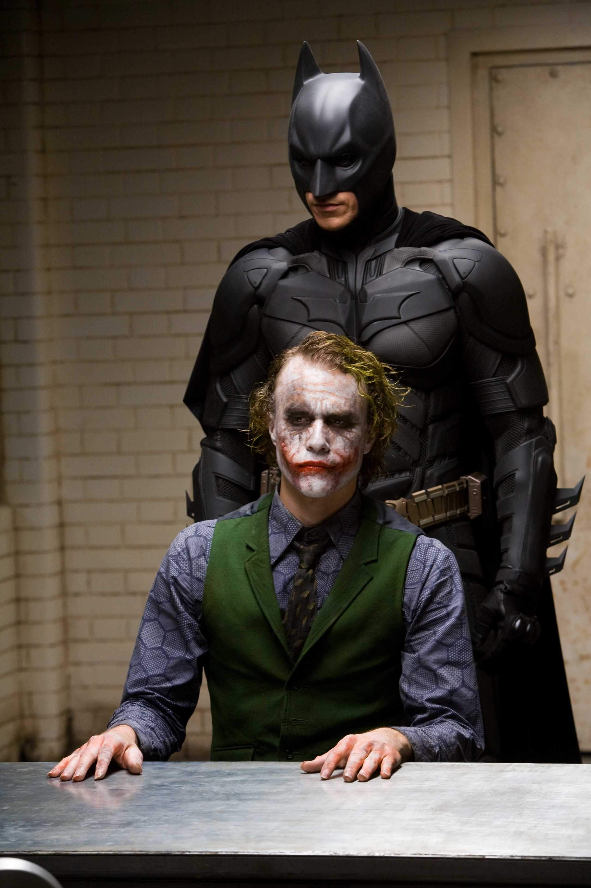
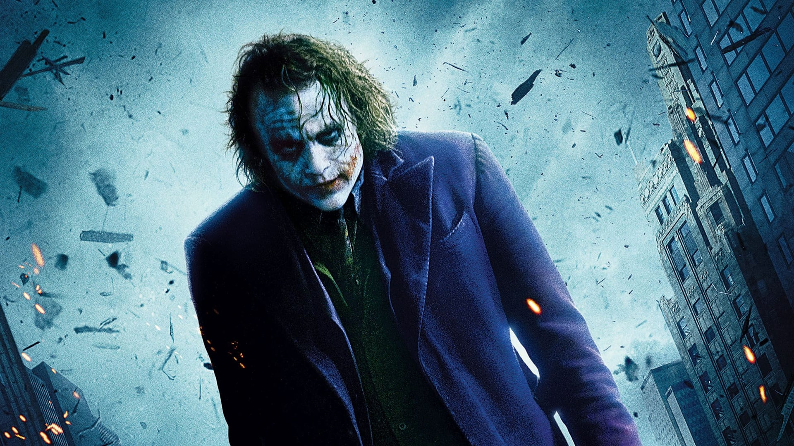

The Dark Knight is a 2008 superhero film directed by Christopher Nolan from a screenplay co-written with his brother Jonathan. Based on the DC Comics superhero Batman, it is the sequel to Batman Begins (2005) and the second installment in The Dark Knight Trilogy. The plot follows the vigilante Batman, police lieutenant James Gordon, and district attorney Harvey Dent, who form an alliance to dismantle organized crime in Gotham City. Their efforts are derailed by the Joker, an anarchistic mastermind who seeks to test how far Batman will go to save the city from chaos.
The film received widespread critical acclaim for its direction, performances, screenplay, and dark tone. It was also a massive commercial success, grossing over $1 billion worldwide. Many consider it one of the greatest superhero films ever made and a landmark in the genre.
The film is renowned for its complex characters, particularly Heath Ledger's portrayal of the Joker, which earned him a posthumous Academy Award for Best Supporting Actor. Ledger's Joker is unpredictable, chaotic, and serves as a dark counterpart to Batman's vigilantism.
